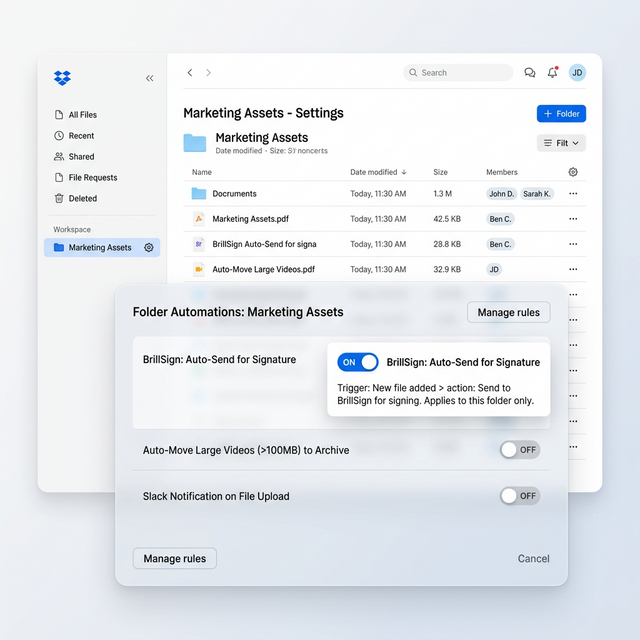
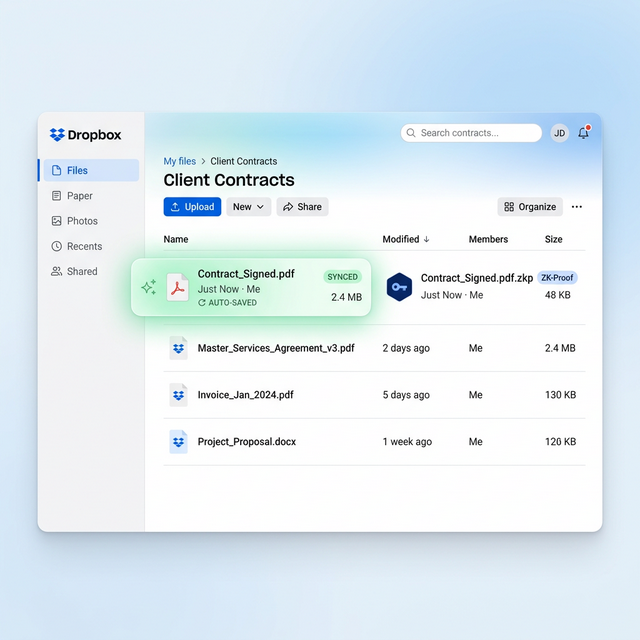
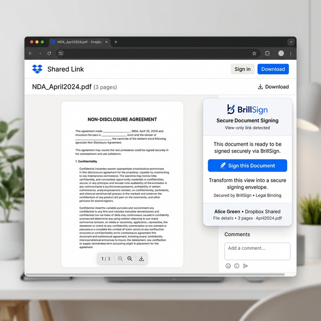

Signing Workflows for Every File in Dropbox.
BrillSign integrates directly with Dropbox — set folder-level signing rules that auto-trigger when files land, and watch signed documents save back automatically to your team's designated folder.
Automate Signing at the
Folder Level.
Set it once and let signing happen automatically. BrillSign watches your Dropbox folders and handles signing workflows without manual intervention.
Set Folders as "Signing Inboxes"
You can configure any specific Dropbox folder to act as a listener. When a team member or integration drops a PDF into that folder, BrillSign automatically detects it.
The system applies your pre-configured signing template to the file and securely routes it to the designated signers—entirely automatically.

Signed Files Return Automatically
Once a document is fully executed, BrillSign automatically deposits the finalized PDF and its cryptographic ZK-proof directly back into your designated Output Folder in Dropbox.
Keep your legal and compliance records impeccably organized without ever manually downloading and uploading files again.

Turn Shared Links into Signing Portals
Don't want to configure complex routing logic? Simply turn any standard Dropbox Shared Link into a secure signing request.
Recipients open the link in any browser and can sign directly on the document preview without needing to download the file or create a Dropbox account.

Drop a File. It Gets Signed. It Comes Back. That Simple.
File Lands in Signing Folder
A file is added to your configured Dropbox signing folder — manually, via sync, or from another integration.
BrillSign Auto-Routes for Signing
BrillSign picks up the file, applies your folder's signing template, and sends to configured signers. ZK-encrypted throughout.
Signed Doc Returns to Dropbox
The completed signed document and proof chain save automatically to your designated Dropbox folder.
Connect Dropbox in 3 Steps.
Connect Your Dropbox
In BrillSign's Integrations panel, click "Connect Dropbox" and authorize via Dropbox OAuth. Takes 30 seconds.
Choose Signing Folders
Select which Dropbox folders should act as signing inboxes. You can configure different signer lists per folder.
Set Signing Templates
Map each folder to a BrillSign template — who gets notified, where fields go, how many signatures are required.
Configure Output Folder
Choose the Dropbox folder where signed documents are saved. Separate from the signing inbox — keeps things clean.
Dropbox Integration Questions
Yes. BrillSign works with Dropbox Personal, Plus, Professional, and all Dropbox Business tiers (Standard, Advanced, Business Plus, Enterprise). Team folders and shared folders are fully supported.
PDF, DOCX, and PNG/JPG files trigger signing when dropped in a configured signing folder. You can configure per-folder file type filters so only PDFs trigger signing, for example.
Signers are configured per folder template in BrillSign. You can hardcode signer emails per template, or use the BrillSign API to dynamically set signers per document based on filename metadata or a header row in a CSV.
BrillSign supports documents up to 50MB per file. Dropbox itself supports much larger files, but signing documents above 50MB typically indicates the document needs splitting. Contact us for large-file enterprise plans.
Ready to Automate Signing in Dropbox?
Connect your Dropbox account and set your first signing folder — under 3 minutes.